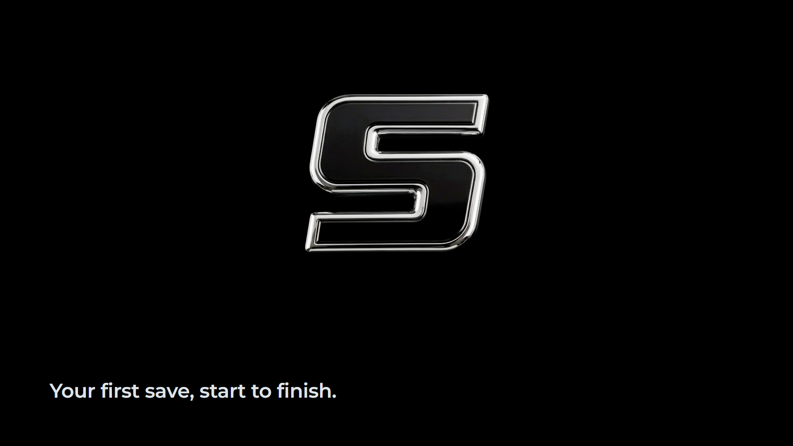
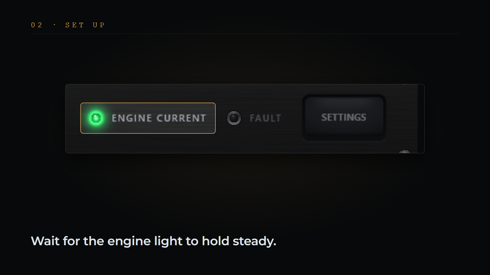
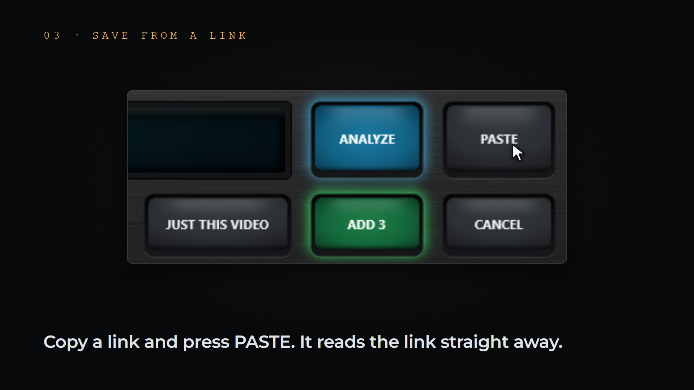
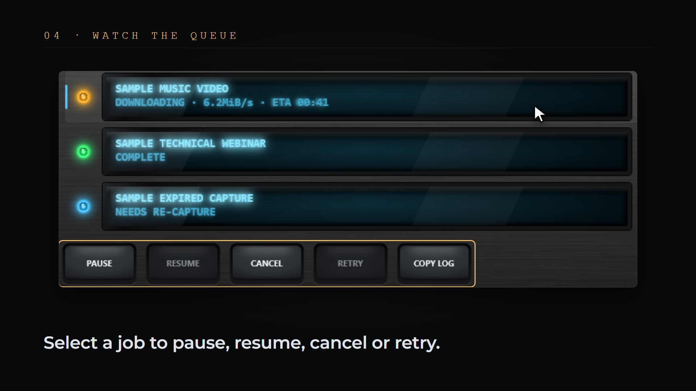
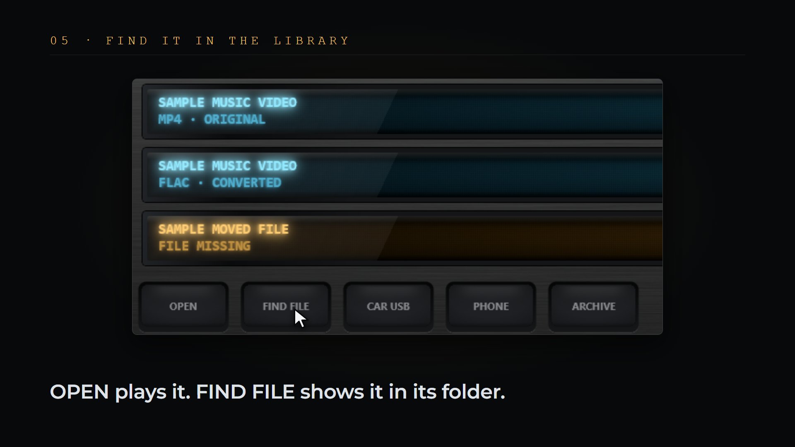
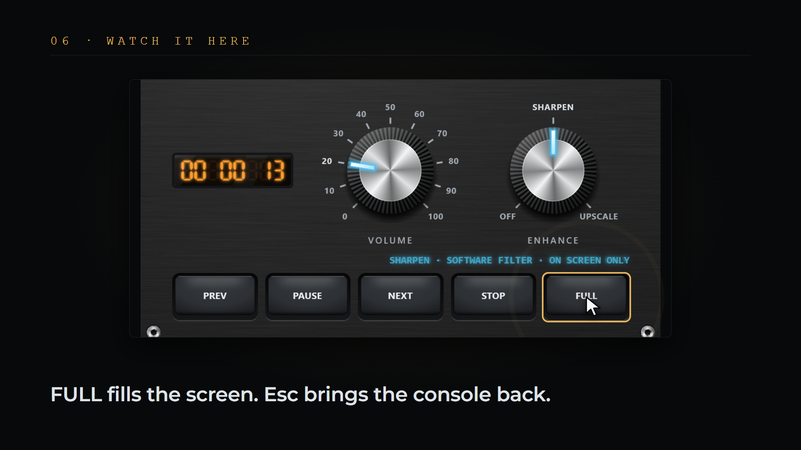
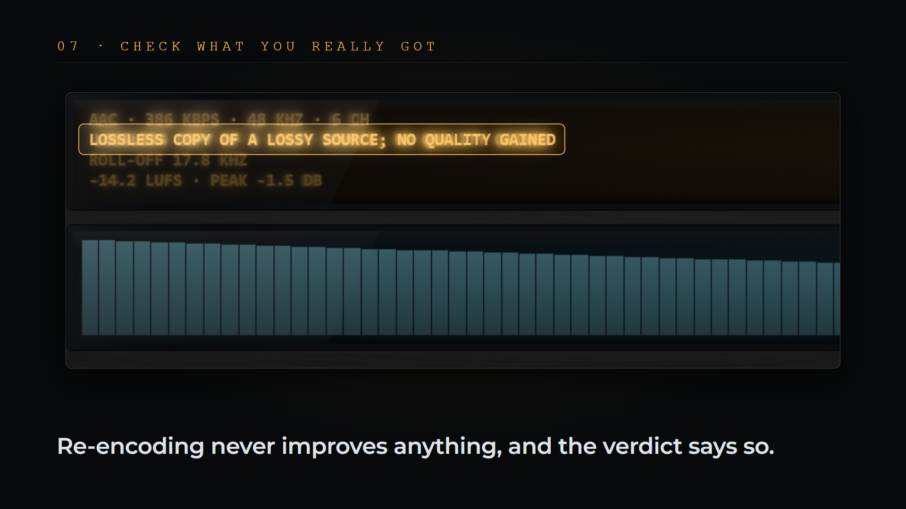
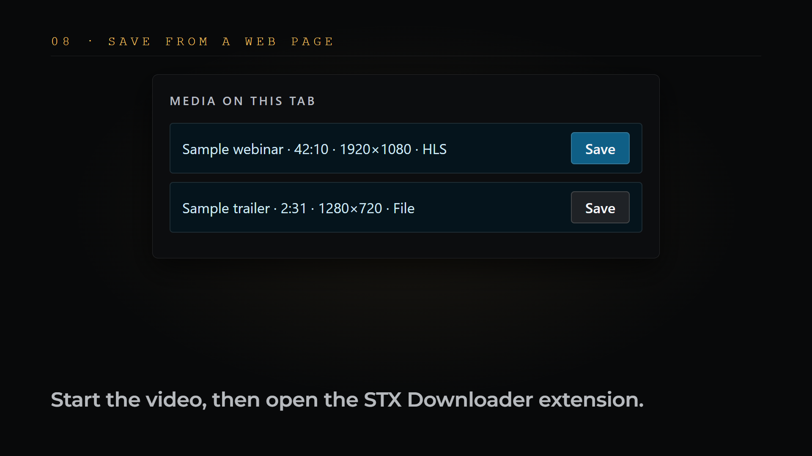
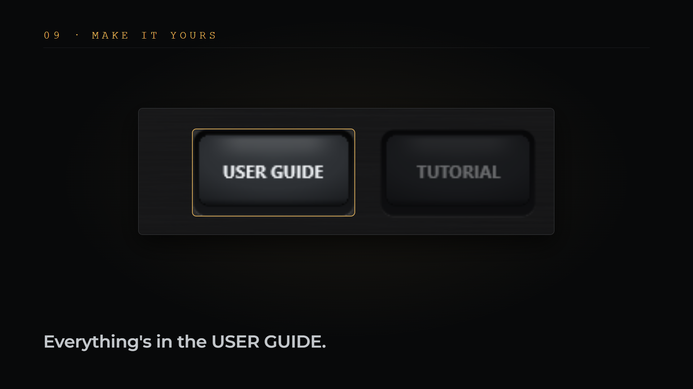

Each frame is posed at its key moment, with no motion yet, showing the caption on screen at that moment. Plates are captures of the real console, with sample data only.

The S blooms on its own black. "Your first save, start to finish."

Push in to the engine light as it goes from busy to steady. First caption: "The first run downloads its tools, about 430 MB."

The cursor presses PASTE, then the real playlist offer appears. Second caption: "A playlist asks first: add its items, or just this video."

The meter fills, then the pads that act on a selected job light up. First caption: "Each job shows its status, a meter and its percent."

A saved row is selected, then OPEN and FIND FILE. Second caption: "CAR USB, PHONE and ARCHIVE convert it for that use."

The whole Player plate, then its title, then the cursor presses FULL, then ENHANCE and its readout are spotlit. Second caption: "FULL fills the screen. Esc brings the console back."

The spectrum sweeps in and the verdict line is spotlit. First caption: "Its audio is measured from the file, not taken from what the site claims."

The extension popup, rebuilt from its own styles with sample rows. First caption: "Start the video, then open the STX Downloader extension."

USER GUIDE spotlit, then a clean cut to the STX-1 badge. First caption: "Set your quality, folder and how many run at once."